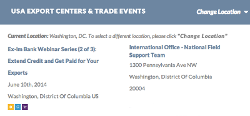
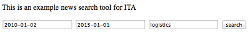

Available APIs
Additional Resources
Apps for Exporters
ITA encourages developers to use the trade data in its APIs to build applications. These data sets are particularly valuable because they originate from authoritative, federal government sources. Developers should build applications that benefit businesses who export their products and services overseas. They can also enhance their existing applications by mashing ITA’s data with other trade-related data.
We are particularly interested in applications that help businesses:
- Learn about exporting
- Get ready to export
- Expand their existing exporting business.
ITA Trade Widgets
ITA has created several widgets that take advantage of the APIs’ search capabilities so you don’t have to. Visit the ITA Trade Widgets page for code that you can immediately add to your Web page or mobile app.
Applications Currently Using ITA's Data
 BusinessUSA helps small businesses find the government resources they need. Their Exporting section automatically populates its pages using ITA's Trade Events and Offices & Centers APIs. Just click Change Location and enter a new zip code to see the results.
Export USA advertises itself as "the official showcase for American-made products and services" and helps U.S. exporters find overseas buyers and distributors. The Export USA home page provides Trade Resources for U.S. companies by displaying the most current Trade Leads, Market Research Reports, Trade News, and Trade Events from ITA.
 The Drew Company created some quick widgets to help their business teams understand the power behind each API. You too can take advantage of the work they’ve done and explore the code for each search tool yourself. There’s one for Market Research, Trade News, and Trade Events.
ITA Trade Widgets
Check out some of the newly developed widgets using our APIs. These widgets make Trade data easily accessible to everyone.
To include any of these on your page:
- Copy the code snippet below the widget
- Paste the code into the body section of your page
- That’s it. Now they’re ready to use!
These widgets can be used to search by keyword or filter multiple parameters to produce accurate results.
Trade Articles
The Trade News & Articles API provides in-depth news and articles written by trade specialists working in the Federal government. This widget enables users to enter a keyword and search all articles for that keyword across the title, body, and tag fields.
<script src="http://internationaltradeadministration.github.io/widgets/javascripts/articles-script.js" type="text/javascript"></script>
<div id="articles-container"></div>
Market Research Library
The Market Research Library API provides metadata for country and industry reports that are produced by ITA’s trade experts and are available in ITA’s online market research library. There are two widgets available. The first enables users to enter a keyword and search all reports for that keyword across the title and body fields. The second enables users to choose a particular Industry and/or a particular Country and find reports that are tagged with both.
<script src="http://internationaltradeadministration.github.io/widgets/javascripts/reports-script.js" type="text/javascript"></script>
<div id="reports-container"></div>
<script src="http://internationaltradeadministration.github.io/widgets/javascripts/mrr-script.js" type="text/javascript"></script>
<div id="mrr-container"></div>
Trade Events
The Trade Events API provides data on events for U.S. businesses interested in selling their products and services overseas. There are two widgets available. The first enables users to enter a keyword and search all events for that keyword across the title field. The second enables users to choose a particular Industry and/or a particular Country and find events that are tagged with both.
<script src="http://internationaltradeadministration.github.io/widgets/javascripts/events-script.js" type="text/javascript"></script>
<div id="events-container"></div>
<script src="http://internationaltradeadministration.github.io/widgets/javascripts/event-script.js" type="text/javascript"></script>
<div id="event-container"></div>
Website Feedback | USA.gov | FOIA | Privacy Policy | Disclaimer | Information Quality Guidelines
The International Trade Administration, U.S. Department of Commerce, manages this global trade site to provide access to ITA information on promoting trade and investment, strengthening the competitiveness of U.S. industry, and ensuring fair trade and compliance with trade laws and agreements. External links to other Internet sites should not be construed as an endorsement of the views or privacy policies contained therein.